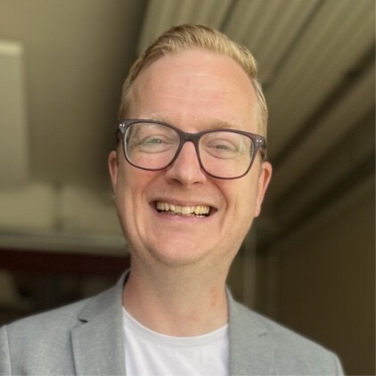

PROBLEMLØSER
Når noget ikke fungerer, starter jeg med at forstå hvorfor. Jeg kobler data, processer og mennesker og leder efter det egentlige problem – ikke bare symptomet.
Analyse · Processer · UdviklingPROBLEMLØSER · IDÉMAGER · RELATIONSSKABER
Når en idé skal udvikles. Når et problem bliver ved med at vende tilbage. Eller når noget skal gentænkes, men løsningen endnu ikke er givet.

Måske har I brug for én, der stiller de rigtige spørgsmål.
Jeg arbejder bedst dér, hvor problemet ikke er helt defineret, og hvor løsningen ikke ligger klar på forhånd. Jeg undersøger, udfordrer, involverer og udvikler – og hjælper med at få det fra tanke til handling.
Når noget ikke fungerer, starter jeg med at forstå hvorfor. Jeg kobler data, processer og mennesker og leder efter det egentlige problem – ikke bare symptomet.
Analyse · Processer · UdviklingJeg elsker idéer, der endnu ikke er færdige. Jeg hjælper med at kvalificere dem, udfordre dem og gøre dem konkrete nok til, at nogen kan bygge videre på dem.
Idéudvikling · Koncept · InnovationDe bedste løsninger bliver sjældent skabt alene. Jeg får de rigtige mennesker rundt om bordet og skaber et rum, hvor forskellige perspektiver kan blive til noget fælles.
Facilitering · Workshops · SamarbejdeFra 6 mennesker med en idé til 60 mennesker i rummet.
Et gratis format for jobsøgende, bygget fra bunden. Koncept, format, partnerskaber, hjemmeside, kommunikation og facilitering. Det begyndte med seks deltagere og voksede til 60.
Se konceptet →Jeg gik tæt på medarbejderne, faciliterede samtaler og workshops og arbejdede på tværs for at forstå, hvad der skabte værdi, drænede og gav lyst til udvikling. Derefter ændrede vi rammer, opgaver og måder at arbejde på.
Jeg analyserede salgsaktivitet, mails, opkald og kundedata, fandt mønstre og flaskehalse og byggede en fælles CRM-struktur, bedre datakvalitet og et tydeligere B2B-kunderejse-perspektiv.
En idé fra et innovationsforløb blev udviklet gennem produktudvikling, workshops, prototyper og partnerskaber. Jeg arbejdede med hele bevægelsen fra “kunne man?” til “lad os prøve”.
Jeg byggede en ny organisation med 27 medarbejdere, udviklede strategi og arbejdsgange og skabte en tydeligere struktur omkring pipeline, kvalitet og performance. Resultat: ca. 25% omsætningsvækst og ca. 30% vækst i den digitale portefølje.
 Nysgerrig af natur.
Nysgerrig af natur.Et konkret udviklingsproblem, hvor I har brug for et ekstra blik, analyse og fremdrift.
Fra spæd idé til kvalificeret koncept, der kan testes, bygges eller præsenteres.
Strukturerede rum, hvor mennesker sammen skal forstå, udvikle, vælge eller skabe noget.
Et gennemprøvet format for sparring og fællesskab – som også kan tilpasses en konkret målgruppe eller udfordring.
RYSTETUR
CV-Rystetur blev skabt, fordi jeg så et behov: jobsøgende havde brug for mere end at sidde alene med deres CV. De havde brug for andre mennesker, ærlig sparring og nye perspektiver.
Formatet er simpelt: mennesker mødes i små grupper, deler erfaringer og giver hinanden konkrete perspektiver. Det virker, fordi folk selv er en del af løsningen.
Jeg har arbejdet med forretningsudvikling, analyse, salg, organisation, processer, idéudvikling og mennesker. På tværs af brancher har der været én rød tråd: Jeg bliver engageret, når noget skal udvikles.
Jeg er ikke den, der nødvendigvis har svaret, før vi begynder. Jeg er den, der gerne vil forstå problemet, finde de rigtige mennesker, stille de besværlige spørgsmål og være med til at bygge svaret.
Chris
Problemløser · Idémager · Relationsskaber

30 minutter. Ingen salgstale. Fortæl mig, hvad I tumler med, hvad I gerne vil skabe, eller hvor I sidder fast. Så finder vi sammen ud af, om jeg kan hjælpe.
BOOK 30 MIN. ↗Bookinglinket sættes ind her, når du har valgt kalenderløsning (fx Cal.com, Calendly eller Microsoft Bookings).